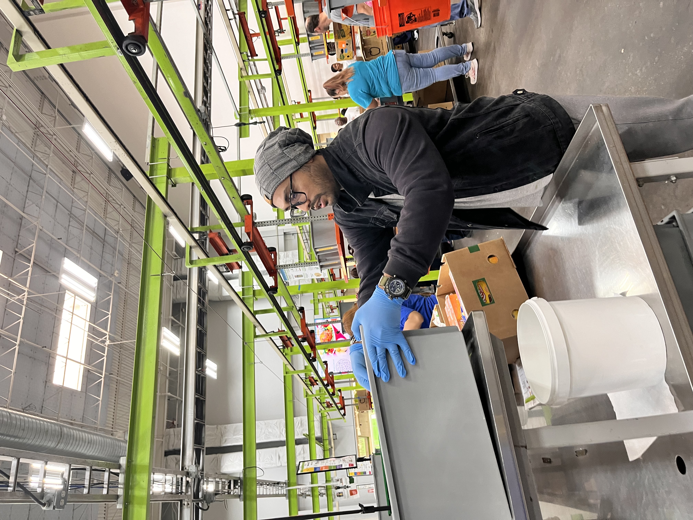

Serving with Heart: My Volunteering Journey

Volunteering at the Houston Food Bank
Giving back to the community through food distribution and teamwork at one of Texas' largest hunger-relief organizations.